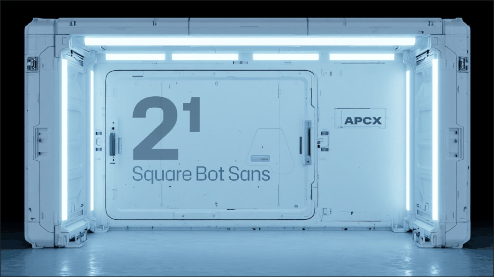

Square Bot Sans is a squared technical sans serif derived from Hubot Sans and extended into a width, weight, and italic design space. Its modular rhythm is intended for science fiction display typography, interface density, technical signage, and identity systems that need a hard-edged voice without losing usable Latin text coverage. To contribute, see github.com/thierryc/SquareBotSans.
The 2.002 release expands the code and technical-use story with a slashed zero, a password/code zero in stylistic set 04, and arrow coverage through U+2199. The Google Fonts candidate is distributed as paired Roman and Italic variable fonts with width and weight axes.
The family keeps the squared construction visible at text sizes while reserving its most distinctive details for signs, labels, terminals, and product graphics. It includes compact proportions for dense layouts, expanded widths for display work, and a full weight range from ExtraLight to Black.
Stylistic sets provide sharper interface behavior without changing the default tone. The standard zero can use the OpenType zero feature for a slashed form, while stylistic set 04 adds a deliberately different code zero alongside the existing uppercase I alternate for password, serial number, and dashboard contexts where glyph confusion matters.
